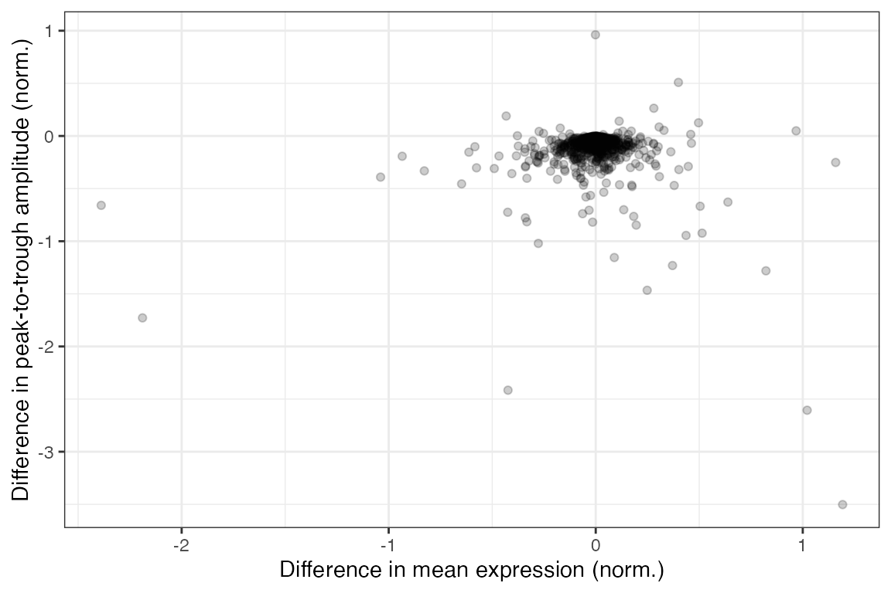
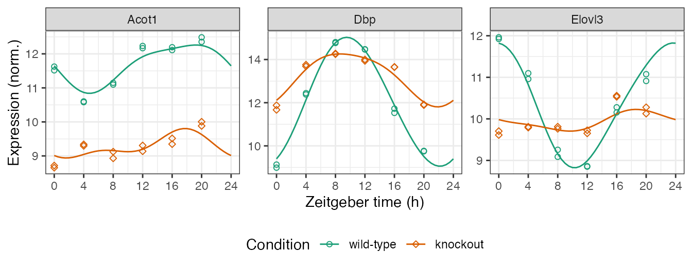

vignettes/differential-rhythmicity.Rmd
differential-rhythmicity.RmdHere we show how to use limorhyde2 to quantify rhythmicity and differential rhythmicity in data from multiple conditions. The data are based on liver samples from wild-type and Rev-erb\(\alpha/\beta\) double-knockout mice (Cho et al. 2012 and GSE34018).
library('data.table')
library('ggplot2')
library('limorhyde2')
library('qs')
doParallel::registerDoParallel()
theme_set(theme_bw())The expression data are in a matrix with one row per gene and one column per sample. The metadata are in a table with one row per sample. To save time and space, the expression data include only 1000 genes.
y = qread(system.file('extdata', 'GSE34018_data.qs', package = 'limorhyde2'))
y[1:5, 1:5]
#> GSM840516 GSM840517 GSM840518 GSM840519 GSM840520
#> 12686 11.962830 11.923338 11.098814 10.958933 9.256413
#> 13170 8.989743 9.132606 12.381036 12.441759 14.766070
#> 26897 11.515292 11.625519 10.579969 10.601969 11.096489
#> 11287 7.985859 7.930935 7.674688 7.899531 7.768563
#> 11421 7.819315 7.697830 7.865435 7.867080 7.897373
metadata = qread(system.file('extdata', 'GSE34018_metadata.qs', package = 'limorhyde2'))
metadata
#> sample cond time
#> 1: GSM840516 wild-type 0
#> 2: GSM840517 wild-type 0
#> 3: GSM840518 wild-type 4
#> 4: GSM840519 wild-type 4
#> 5: GSM840520 wild-type 8
#> 6: GSM840521 wild-type 8
#> 7: GSM840522 wild-type 12
#> 8: GSM840523 wild-type 12
#> 9: GSM840524 wild-type 16
#> 10: GSM840525 wild-type 16
#> 11: GSM840526 wild-type 20
#> 12: GSM840527 wild-type 20
#> 13: GSM840504 knockout 0
#> 14: GSM840505 knockout 0
#> 15: GSM840506 knockout 4
#> 16: GSM840507 knockout 4
#> 17: GSM840508 knockout 8
#> 18: GSM840509 knockout 8
#> 19: GSM840510 knockout 12
#> 20: GSM840511 knockout 12
#> 21: GSM840512 knockout 16
#> 22: GSM840513 knockout 16
#> 23: GSM840514 knockout 20
#> 24: GSM840515 knockout 20
#> sample cond timeBecause the samples were only acquired every four hours, we somewhat arbitrarily use three knots instead of the default four. We specify condColname so getModelFit() knows to fit a differential rhythmicity model.
fit = getModelFit(y, metadata, nKnots = 3L, condColname = 'cond')
fit = getPosteriorFit(fit)
#> - Computing 1000 x 109 likelihood matrix.
#> - Likelihood calculations took 0.62 seconds.
#> - Fitting model with 109 mixture components.
#> - Model fitting took 0.17 seconds.
#> - Computing posterior matrices.
#> - Computation allocated took 0.48 seconds.Next, we use the posterior fits to compute rhythmic statistics for each gene in each condition.
rhyStats = getRhythmStats(fit)
rhyStats
#> cond feature peak_phase peak_value trough_phase trough_value
#> 1: wild-type 12686 23.731907 11.805004 10.2376567 8.816988
#> 2: wild-type 13170 9.548521 15.026248 22.2237977 9.081463
#> 3: wild-type 26897 18.878025 12.283763 4.7377331 10.800256
#> 4: wild-type 11287 0.000000 7.945029 7.6414790 7.776868
#> 5: wild-type 11421 9.355956 7.813357 20.5368272 7.789819
#> ---
#> 1996: knockout 666794 17.833621 7.897756 9.7627947 7.822690
#> 1997: knockout 791260 18.059756 7.888444 9.9512924 7.864519
#> 1998: knockout 100042056 10.576378 8.151575 18.2433479 8.089544
#> 1999: knockout 100503992 18.194425 7.984032 0.6154951 7.948104
#> 2000: knockout 110599566 6.297484 8.952046 12.4331332 8.886811
#> peak_trough_amp rms_amp mean_value
#> 1: 2.98801554 1.041273754 10.368427
#> 2: 5.94478546 2.095276507 12.018767
#> 3: 1.48350743 0.522212802 11.675870
#> 4: 0.16816116 0.050266000 7.854743
#> 5: 0.02353735 0.008469385 7.803961
#> ---
#> 1996: 0.07506603 0.024883172 7.850971
#> 1997: 0.02392409 0.007805596 7.873983
#> 1998: 0.06203190 0.020564363 8.129401
#> 1999: 0.03592787 0.010902899 7.964531
#> 2000: 0.06523411 0.021975379 8.919559We can now calculate the rhythmic differences for each gene between any two conditions, here between wild-type and knockout.
diffRhyStats = getDiffRhythmStats(fit, rhyStats, condLevels = levels(metadata$cond))
diffRhyStats
#> feature diff_mean_value diff_peak_trough_amp diff_rms_amp
#> 1: 12686 -0.4237485801 -2.41555987 -0.856934478
#> 2: 13170 1.1925968597 -3.50242526 -1.236369874
#> 3: 26897 -2.3885701834 -0.65917712 -0.259106019
#> 4: 11287 0.0069890216 -0.11965920 -0.035330371
#> 5: 11421 -0.0008937472 -0.01386807 -0.005230240
#> ---
#> 996: 666794 -0.1047523446 -0.13160037 -0.048264969
#> 997: 791260 -0.0315662885 -0.02580540 -0.009827704
#> 998: 100042056 0.0529189530 -0.17808010 -0.055831405
#> 999: 100503992 -0.0715024716 -0.05128850 -0.015491724
#> 1000: 110599566 -0.0038814795 -0.08101644 -0.023082198
#> diff_peak_phase diff_trough_phase rms_diff_rhy
#> 1: -6.1148289 -1.1197303 2.77834461
#> 2: -1.1898390 -0.5453936 3.26249917
#> 3: -0.9541338 -2.9555070 1.13925111
#> 4: -6.0138039 -7.2345791 0.19676535
#> 5: 0.4067681 -2.6386364 0.01647651
#> ---
#> 996: -3.4403564 0.1154706 0.16957423
#> 997: -2.1565814 -0.6250482 0.02988062
#> 998: 8.7641989 8.8167707 0.17520674
#> 999: 7.1117342 -2.5497265 0.09018092
#> 1000: -5.8198126 6.7291111 0.25365542We can examine the distributions of the statistics in various ways, such as ranking genes by difference in peak-to-trough amplitude (no p-values necessary) or plotting difference in peak-to-trough amplitude vs. difference in mean expression.
diffRhyStats[order(diff_peak_trough_amp)]
#> feature diff_mean_value diff_peak_trough_amp diff_rms_amp diff_peak_phase
#> 1: 13170 1.192596860 -3.5024253 -1.23636987 -1.189839
#> 2: 17748 1.021233223 -2.6059322 -0.89424913 -3.233306
#> 3: 12686 -0.423748580 -2.4155599 -0.85693448 -6.114829
#> 4: 171281 -2.189094323 -1.7283359 -0.65075570 1.741861
#> 5: 353187 0.248525573 -1.4660770 -0.51792557 -1.821647
#> ---
#> 996: 319176 0.113262801 0.1407135 0.05384520 11.970424
#> 997: 67712 -0.432486979 0.1894168 0.06912838 9.273663
#> 998: 18551 0.280669669 0.2633202 0.10138336 2.230022
#> 999: 74018 0.399376794 0.5090945 0.18131074 5.775007
#> 1000: 13636 -0.001245859 0.9614958 0.32770455 -5.153056
#> diff_trough_phase rms_diff_rhy
#> 1: -0.5453936 3.2624992
#> 2: -4.4134676 3.7742016
#> 3: -1.1197303 2.7783446
#> 4: 9.0947750 2.2661074
#> 5: -0.5587615 1.4133439
#> ---
#> 996: -5.2928158 0.4591674
#> 997: 2.3743097 0.4408391
#> 998: 0.2153206 0.5570231
#> 999: 11.1538435 0.6470573
#> 1000: -2.7431503 1.5894905
ggplot(diffRhyStats) +
geom_point(aes(x = diff_mean_value, y = diff_peak_trough_amp), alpha = 0.2) +
labs(x = 'Difference in mean expression (norm.)',
y = 'Difference in peak-to-trough amplitude (norm.)')
We can compute the expected measurements for one or more genes at one or more time-points in each condition, which correspond to the fitted curves. Here we plot the posterior fits and observed expression for three genes (converting from gene id to gene symbol).
genes = data.table(id = c('13170', '12686', '26897'),
symbol = c('Dbp', 'Elovl3', 'Acot1'))
measFit = getExpectedMeas(fit, times = seq(0, 24, 0.5), features = genes$id)
measFit[genes, symbol := i.symbol, on = .(feature = id)]
print(measFit, nrows = 10L)
#> time cond feature value symbol
#> 1: 0 wild-type 13170 9.401610 Dbp
#> 2: 0 wild-type 12686 11.801266 Elovl3
#> 3: 0 wild-type 26897 11.615345 Acot1
#> 4: 0 knockout 13170 12.192959 Dbp
#> 5: 0 knockout 12686 9.915804 Elovl3
#> ---
#> 290: 24 wild-type 12686 11.801266 Elovl3
#> 291: 24 wild-type 26897 11.615345 Acot1
#> 292: 24 knockout 13170 12.192959 Dbp
#> 293: 24 knockout 12686 9.915804 Elovl3
#> 294: 24 knockout 26897 9.043023 Acot1Next we combine the observed expression data and metadata. The curves show how limorhyde2 is able to fit non-sinusoidal rhythms.
measObs = mergeMeasMeta(y, metadata, features = genes$id)
measObs[genes, symbol := i.symbol, on = .(feature = id)]
print(measObs, nrows = 10L)
#> sample cond time feature meas symbol
#> 1: GSM840504 knockout 0 13170 11.669138 Dbp
#> 2: GSM840504 knockout 0 12686 9.705361 Elovl3
#> 3: GSM840504 knockout 0 26897 8.654624 Acot1
#> 4: GSM840505 knockout 0 13170 11.877697 Dbp
#> 5: GSM840505 knockout 0 12686 9.611530 Elovl3
#> ---
#> 68: GSM840526 wild-type 20 12686 10.911935 Elovl3
#> 69: GSM840526 wild-type 20 26897 12.486105 Acot1
#> 70: GSM840527 wild-type 20 13170 9.749365 Dbp
#> 71: GSM840527 wild-type 20 12686 11.075636 Elovl3
#> 72: GSM840527 wild-type 20 26897 12.352601 Acot1
ggplot() +
facet_wrap(vars(symbol), scales = 'free_y', nrow = 1) +
geom_line(aes(x = time, y = value, color = cond), data = measFit) +
geom_point(aes(x = time %% 24, y = meas, color = cond, shape = cond),
size = 1.5, data = measObs) +
labs(x = 'Zeitgeber time (h)', y = 'Expression (norm.)',
color = 'Condition', shape = 'Condition') +
scale_x_continuous(breaks = seq(0, 24, 4)) +
scale_color_brewer(palette = 'Dark2') +
scale_shape_manual(values = c(21, 23)) +
theme(legend.position = 'bottom')